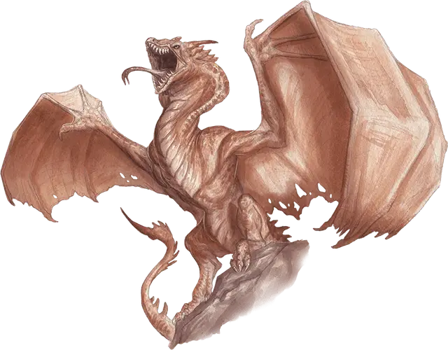

Виверна
Wyvern
Большой Дракон, без мировоззрения

Класс Доспеха 13 (природный доспех)
Хиты 110 (13к10 + 39)
Скорость 20 футов, летая 80 футов
| мод | спас | ||
|---|---|---|---|
| СИЛ | 19 | +4 | +4 |
| ЛОВ | 10 | +0 | +0 |
| ТЕЛ | 16 | +3 | +3 |
| мод | спас | ||
|---|---|---|---|
| ИНТ | 5 | −3 | −3 |
| МДР | 12 | +1 | +1 |
| ХАР | 6 | −2 | −2 |
Навыки Восприятие +4
Чувства тёмное зрение 60 футов, пассивное Восприятие 14
Опасность 6 (2300 опыта)
Бонус мастерства +3
Среда обитания Горы, Холмы
Действия
Мультиатака. Виверна совершает две атаки: одну укусом, и одну жалом. Во время полёта она может использовать когти вместо одной другой атаки.
Укус. Рукопашная атака оружием: +7 к попаданию, досягаемость 10 футов, одно существо. Попадание: Колющий урон 11 (2к6 + 4).
Когти. Рукопашная атака оружием: +7 к попаданию, досягаемость 5 футов, одна цель. Попадание: Рубящий урон 13 (2к8 + 4).
Жало. Рукопашная атака оружием: +7 к попаданию, досягаемость 10 футов, одно существо. Попадание: Колющий урон 11 (2к6 + 4). Цель должна совершить спасбросок Телосложения Сл 15, получая урон ядом 24 (7к6) при провале, или половину этого урона при успехе.
Описание
Путешественники порой видят в небесах темную крылатую фигуру виверны, несущей добычу. Это родственники великих драконов, и охотятся они в тех же дремучих лесах и пещерах. Их появление вызывает всплески тревоги на границах цивилизации.
У виверны есть две чешуйчатые лапы, кожистые крылья и мощный хвост, увенчанный самым мощным оружием виверны: ядовитым жалом. Яд жала виверны может убить существо в считанные секунды. Необычайно сильный яд в крови жертвы уничтожает вены и артерии по пути к её сердцу. Но, несмотря на смертоносность виверн, находятся охотники и искатели приключений, выслеживающие виверн ради их яда, который используется в алхимии и наносится на оружие.
Воздушные охотники. Виверны не сражаются на земле кроме случаев, когда иными способами жертву не достать, или когда их заманили в положение, при котором сражение в воздухе не представляется возможным. Если вынудить её сражаться на земле, виверна припадает, шипя и рыча, при этом держа жало над головой.
Агрессивные и безудержные. Виверны прекращают преследовать свою добычу только если получают серьезную травму, или если жертве так долго удается ускользать, что легче становится поймать какую-нибудь другую добычу. Если убегающее существо забьется куда-то, куда виверна не может пролезть из-за размера, она будет охранять выход из этого убежища, пытаясь при возможности достать жертву жалом.
Хотя виверны гораздо хитрее обычных животных, они далеко не такие умные, как их драконьи собратья. Поэтому если существо, за которым с воздуха охотится виверна, сохраняет самообладание, оно вполне может ускользнуть от виверны или провести её. Виверны следуют за жертвой кратчайшим путем, не раздумывая о возможной засаде.
Прирученные виверны. Виверну можно приручить, чтобы использовать как ездовое животное, однако это трудная и опасная задача. Лучше всего выращивать виверн для этих целей с самого младенчества. Тем не менее, хищный темперамент виверн стоил жизни многим горе-дрессировщикам.